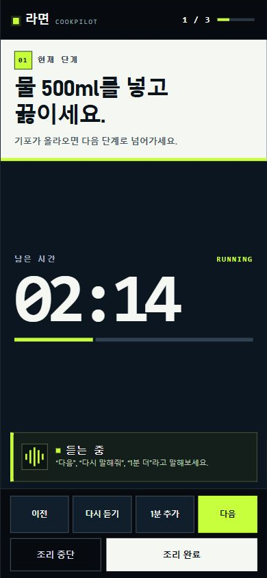
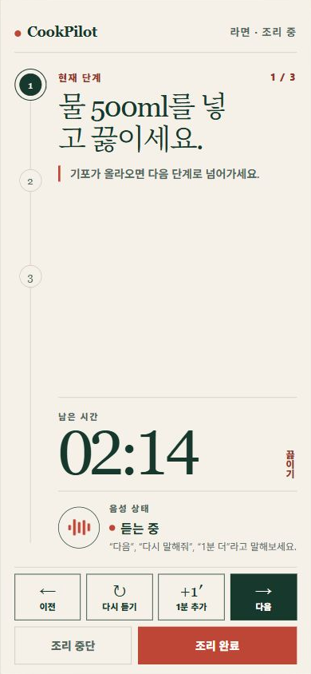

A · Command Kitchen 거대한 타이머와 하단 조작 패널을 앞세운 전문 주방 도구형.  A를 선호안으로 선택 평점54321 A 코멘트 인터랙티브 원본 크게 보기
C · Calm Recipe Journal 단계 흐름과 판단 기준을 차분하게 보여주는 에디토리얼 레시피형.  C를 선호안으로 선택 평점54321 C 코멘트 인터랙티브 원본 크게 보기